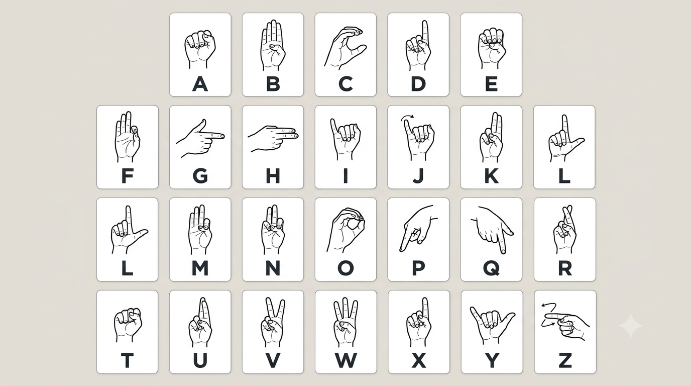

Hand Gesture Communicator
A desktop app that tracks your hands through a webcam, recognizes static ASL letters and custom dynamic phrases, speaks them aloud in real-time, and turns sign practice into a game.
Three Modes
Unified landmark detection feeding three real-time pipelines.
Letters
Recognizes static ASL letters (A through Y). Stable gestures are appended to a word line and voiced aloud via text-to-speech.
Phrases
Classifies dynamic custom gestures (e.g., waving hello, swipes, thumbs-up) over continuous 30-frame sequence buffers.
Game
Presents random 3-letter vocabulary challenges. Form each target sign in order to advance the score and practice sign literacy.
What is ASL?
American Sign Language is a rich visual-spatial language with its own morphology and syntax.
ASL is a natural language utilized across Deaf communities. Signs are formed by combining hand configuration, orientation, location, movement patterns, and facial expressions.
Fingerspelling represents letters on one hand to spell names, titles, and loan words. While a subset of natural signing, it provides an ideal baseline for landmark computer vision systems.
Supported Signs
Letters J and Z involve continuous trajectory tracing in the air; our static classifier evaluates fixed landmark coordinates, making them ideal targets for dynamic phrase recording.
Fingerspelling Symbol Chart

How MediaPipe Tracks Hands
Raw video frames are converted into lightweight 21-point geometric skeletons.
The 21 landmarks. Green points denote fingertips.
Google MediaPipe Hands provides real-time multi-hand perception across two cooperative models:
- Palm Detection An oriented bounding box detector identifies palm positions, which remain consistent even under finger articulation.
- 21 Landmark Regression Predicts 21 3D coordinates (x, y, z) directly within the cropped palm region with sub-pixel precision.
- Tracking Pipeline Landmarks from previous frames seed subsequent region bounding boxes, bypassing full-frame scans until tracking is interrupted.
Architecture & Pipeline
From webcam frame capture to voice synthesis.
Text-to-Speech: Employs macOS say or Windows pyttsx3 for completely offline, zero-latency speech feedback.
Tech Stack
Open-source technologies powering the application.
| Component | Technology | Role |
|---|---|---|
| Language | Python 3.10–3.12 | Core application orchestration |
| Vision | OpenCV (cv2) | Camera stream, bounding overlays, UI canvas |
| Landmarks | MediaPipe Hands 0.10.14 | 21-point geometric skeleton tracking |
| Alphabet Model | TensorFlow / Keras 2.16.2 | Pre-trained ASL letter classifier |
| Phrase Model | scikit-learn (SVM) & joblib | Dynamic gesture sequence classification |
| Data Processing | NumPy | Array normalization, temporal frame rolling |
| Audio Output | macOS say / pyttsx3 | Local zero-latency speech synthesis |
Quickstart & Execution
Run locally on macOS or Windows using Python.
git clone https://github.com/ericktitusk/gesture-communicator.git
cd gesture-communicator
python -m venv venv
source venv/bin/activate # macOS / Linux
venv\Scripts\activate # Windows
pip install -r requirements.txt
python app.pyControls: 1 Letters Mode, 2 Phrases Mode, 3 Game Mode, r Reset text, m Mute audio, f Toggle fullscreen, q Quit.
Current Scope & Future Work
- Static fingerspelling recognizes letters A through Y (excluding moving signs J and Z).
- Custom gestures expand vocabulary via simple
collect.pyandtrain.pycycles. - Optimal tracking requires decent front lighting and a single hand in camera view.